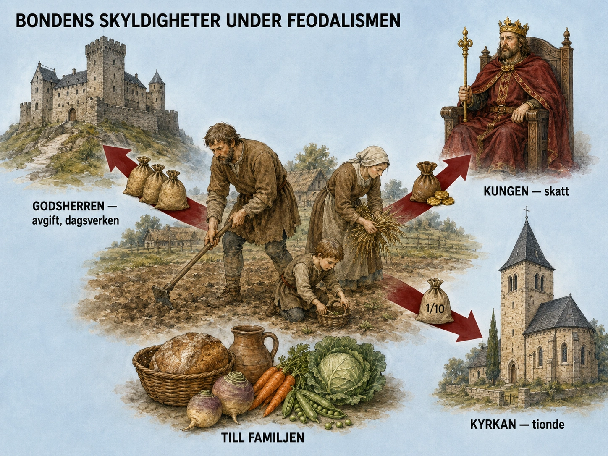
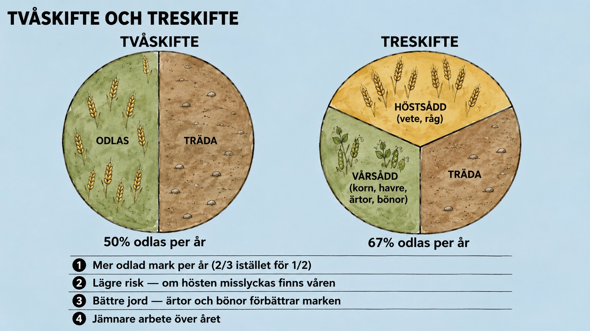
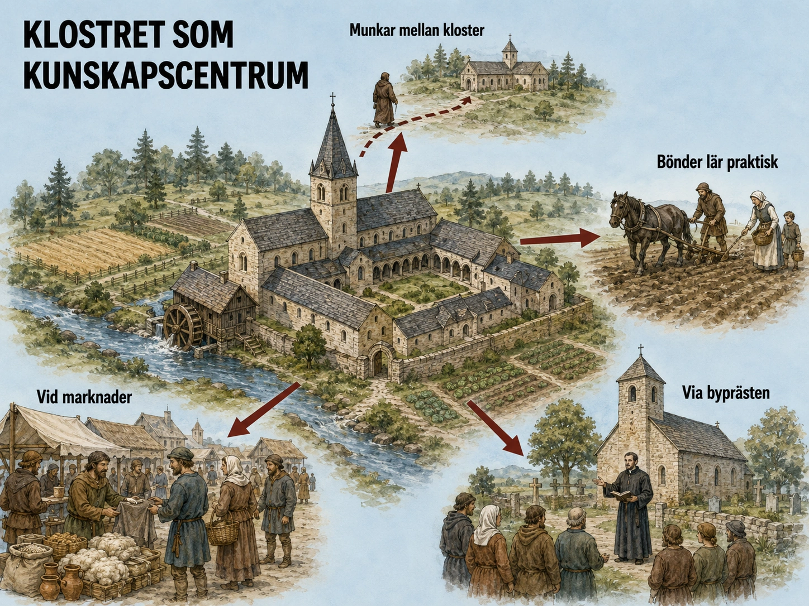
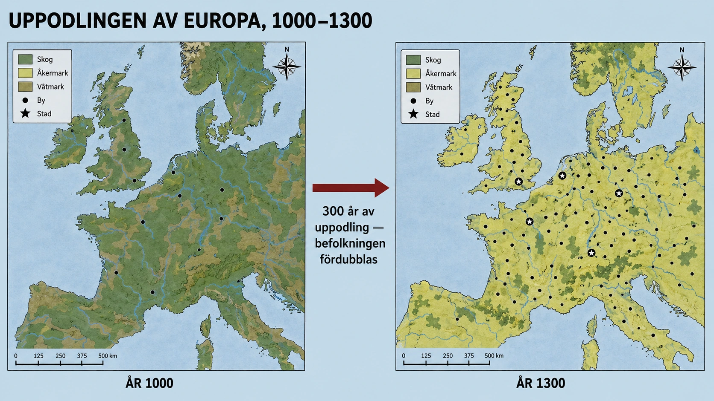

— bättre redskap, mer mat, ett samhälle som börjar växa —
De flesta människor under medeltiden bodde på landsbygden och arbetade med jordbruk. Många var bönder som inte själva ägde sin jord. Vi börjar med att se hur det var att leva som en bonde i det feodala samhället.
I förra avsnittet om feodalismen läste du om hur samhället var uppbyggt. Längst ner i pyramiden fanns bönderna. De flesta bönder ägde inte själva sin mark. I stället fick de bruka jorden hos en jordägare. Jordägaren kunde vara en adelsman, riddare, biskop eller ett kloster.
Många bönder var livegna. Det betydde inte att de var slavar — men de var bundna till godset. De kunde inte bara flytta därifrån. Om godset såldes följde bönderna ofta med.
Bondefamiljen odlade säd som råg, korn, havre och ibland vete. De odlade också ärtor, bönor, kål och rovor. De hade djur: kor, grisar, får, höns och ibland en häst eller oxe.

Men bonden odlade inte bara för sin egen familj. En stor del av arbetet gick till jordägaren och kyrkan. Bonden hade tre maktcentra som ville ha del av hans arbete.
För det första: avgift till jordägaren för rätten att bruka jorden. Det kunde betalas i pengar, men oftast i varor — säckar med säd, kött, ägg, ost eller ved.
För det andra: dagsverken. Bonden skulle arbeta vissa dagar gratis på jordägarens egen mark. Han kunde plöja, skörda eller hugga ved utan att få lön.
För det tredje: tionde till kyrkan. En tiondel av skörden eller inkomsten skulle gå till att försörja präster, bygga kyrkor och hjälpa fattiga.
Året styrdes av jordbruket. På våren plöjdes och såddes jorden. På sommaren rensade man ogräs och tog hand om djuren. På hösten skördade man. På vintern lagade man redskap och försökte överleva.
En dålig skörd kunde betyda svält. Men avgifterna skulle ändå betalas. Bondefamiljen levde nära gränsen — och i byn samarbetade alla för att klara sig.
I nästa del ska vi se hur jordbruket började förändras — med nya redskap och nya odlingssystem.
Under medeltiden bodde de flesta människor på landsbygden och arbetade med jordbruk. En vanlig bondefamilj levde på en gård som tillhörde en större jordägare, ofta en adelsman, riddare, biskop eller ett kloster. Bonden ägde alltså sällan marken själv. I stället fick familjen bruka jorden mot att de betalade avgifter och arbetade åt jordägaren. En sådan bonde kallades ofta livegen.
Att vara livegen betydde inte att man var slav, men man var inte heller fri på samma sätt som en fri bonde. Den livegne bonden var bunden till godset eller byn. Han kunde inte bara flytta därifrån om han ville. Om godset såldes eller ärvdes bort följde bönderna ofta med som en del av godsets arbetskraft. För bonden var marken, familjen och arbetsplikterna därför starkt sammanbundna.
Bondefamiljens viktigaste uppgift var att odla mat. De odlade säd, till exempel råg, korn, havre och vete där klimatet tillät det. De kunde också odla ärtor, bönor, rovor, kål och andra grödor som gick att äta eller lagra. Familjen hade ofta några djur: kor, grisar, får, getter, höns och ibland oxar eller hästar. Djuren gav mjölk, kött, ägg, ull, gödsel och dragkraft.
Men bonden odlade inte bara för sin egen familj. En stor del av arbetet gick till att uppfylla skyldigheter mot jordägaren, alltså den herre som ägde marken. I det feodala samhället kunde jordägaren själv vara vassal till en ännu mäktigare herre. Vassalen hade fått mark i utbyte mot trohet och militärt stöd. För att vassalen skulle kunna leva som krigare eller storman behövde han inkomster från bönderna. Därför blev böndernas arbete grunden för hela feodalsamhället.
Böndernas skyldigheter kunde se olika ut, men de bestod ofta av flera delar.
För det första skulle bonden betala arrende eller avgift för att få bruka jorden. Det kunde betalas i pengar, men under tidig medeltid var det vanligt att betala i varor. Bonden kunde till exempel lämna säckar med säd, kött, ägg, ost, ull eller ved.
För det andra skulle bonden utföra dagsverken. Det betydde att bonden vissa dagar måste arbeta på jordägarens egna åkrar, skogar, kvarnar, vägar eller byggnader. Om jordägaren behövde få in sin skörd kunde bönderna kallas in för att arbeta på hans mark i stället för på sin egen.
För det tredje behövde bonden ofta betala avgifter för att använda saker som jordägaren kontrollerade. Det kunde vara kvarnen där säden maldes till mjöl, ugnen där brödet bakades, skogen där man hämtade ved eller betesmarken där djuren gick.
För det fjärde betalade bonden också till kyrkan. Den viktigaste avgiften var tionde, vilket betydde att en del av skörden eller inkomsten skulle gå till kyrkan. Kyrkan behövde försörja präster, bygga kyrkor, hjälpa fattiga och driva kloster.
Det vardagliga livet var hårt och osäkert. Årets rytm styrde nästan allt. På våren skulle jorden plöjas och sås. På sommaren skulle ogräs rensas, hö slås och djur skötas. På hösten skulle skörden tas in. På vintern lagade man redskap, tog hand om djuren, spann garn, vävde tyg och försökte överleva tills nästa odlingssäsong.
En dålig skörd kunde få katastrofala följder. Om det regnade för mycket, blev torka, kom frost eller om djuren dog kunde familjen få för lite mat. Samtidigt skulle avgifter ändå betalas. Därför levde många bondefamiljer nära gränsen till svält.
Samtidigt var bygemenskapen viktig. Bönderna samarbetade med plöjning, skörd, djurhållning och försvar. De flesta levde i små byar där alla kände varandra. Kyrkan, godset och byn var de tre viktigaste delarna av deras värld.
I nästa del ska vi se hur jordbruket började utvecklas — med nya redskap och nya odlingssystem som gjorde att bönderna kunde producera mer mat än någonsin förut.
Under medeltiden bodde nästan alla — kanske 90 procent eller mer av befolkningen — på landsbygden och arbetade med jordbruk. För att förstå Högmedeltiden behöver vi börja här, vid den breda basen av pyramiden, där de allra flesta människor levde sina liv. Vi har redan mött bönderna i §A av feodalism-avsnittet och i djupdykningen "En bondes dag". Nu går vi djupare — in i den konkreta ekonomiska logik som band bonden, godsherren och kyrkan i ett system där alla var beroende av varandra, men där makten var mycket ojämnt fördelad.
De flesta bönder under tidig och hög medeltid var livegna. Som du läst tidigare betydde det inte att de var slavar — men det betydde inte heller att de var fria.
En slav är någon som kan köpas och säljas som en sak — utan rättigheter, utan familj, utan plats i samhället. En livegen var något annat. Han hade en familj, en plats, en uppgift och vissa rättigheter inom byns gemenskap. Men han var bunden till jorden på ett mycket konkret sätt: han kunde inte flytta utan tillstånd, han kunde inte själv välja vem hans barn skulle gifta sig med utan godsherrens godkännande, och om jorden bytte ägare följde han med som en del av godset.
För att fatta det här i moderna termer: föreställ dig att du inte kunde flytta från din hemstad utan tillstånd. Att du var bunden till en arbetsgivare som du inte hade valt och inte kunde lämna. Att en del av varje månadslön gick till någon utan att du kunde säga ifrån. Det är ungefär den situation en livegen befann sig i — under hela livet, från födsel till död, och även genom barnen.
Men — och det är viktigt — han hade också skydd, en plats i världen, en gemenskap och en känsla av att livet hade en mening enligt den medeltida världsbilden. Det var inget han nödvändigtvis upplevde som förtryck. Det var "så det var".
Bondefamiljen producerade nästan allt de behövde själv. Det är en av de viktigaste skillnaderna mellan medeltidens ekonomi och vår: handeln var liten, marknadsekonomin svag, och de flesta hushåll var självförsörjande.
Familjen odlade säd: råg, korn, havre, vete där klimatet tillät. De odlade också ärtor, bönor, rovor, kål och olika lokala grödor. De hade djur: kor som gav mjölk, grisar för kött, får för ull och kött, höns för ägg, ibland en oxe som dragkraft, ibland en häst på rikare gårdar.
Varje produkt hade flera användningsområden. Kornet maldes till mjöl och bakades till bröd, men det jästes också till öl — som var den vanligaste drycken eftersom rent vatten ofta var osäkert. Mjölk blev ost och smör eftersom det inte gick att lagra färsk. Får gav ull som spunnits till garn och vävdes till tyg under långa vinterkvällar. Gödseln från djuren gick tillbaka till åkrarna som naturligt gödsel. Inget slösades bort.
Det här var inte en romantisk "närproduktion". Det var en hård nödvändighet. Om en familj inte producerade allt själv hade de inte mat eller kläder.
Men bondens arbete räckte inte bara till familjens behov. Han var en del av det feodala systemet du läst om — och det systemet krävde att överskottet (alltså det som producerades utöver vad familjen själv behövde) gick uppåt i pyramiden.
För att förstå varför behöver vi tänka oss kedjan. Riddaren behövde rustning, häst och vapen — och tid att träna. Han kunde inte själv producera mat. Den fick han genom att hans förläning innehöll bönder som arbetade åt honom. Adelsmannen behövde en borg, vasaller, fester, kläder, krig — och pengar för allt detta. Hans inkomster kom också från bönder. Kungen behövde armé, hov, ämbeten, slott. Också detta kom i sista hand från bönder. Kyrkan behövde präster, kyrkor, kloster, hjälp till fattiga — också detta från bönder.
Hela det feodala systemet vilade på böndernas arbete. Det är en konkret bild att hålla i huvudet: när du tänker dig en riddare i full rustning på sin häst, så har den rustningen, hästen, slottet och allt annat producerats — direkt eller indirekt — av bondefamiljer som du knappt får läsa om i historieböckerna. Pyramiden är inte bara en bild. Den är en ekonomisk verklighet.
Bondens skyldigheter delades upp i fyra delar.
Arrende eller avgift. Detta var "hyran" för att få bruka jorden. Under tidig medeltid betalades det nästan alltid i varor — säd, kött, ägg, ost, ull eller ved — eftersom pengar var ovanliga. Under hög- och senmedeltid blev pengabetalning vanligare i takt med att handeln växte. Storleken på arrendet var ofta fastställd genom tradition: "så här mycket har det alltid varit" var ett kraftfullt argument i medeltidens rättssystem.
Dagsverken. Bonden skulle arbeta vissa dagar — kanske två eller tre per vecka, beroende på godset — på godsherrens egen mark. Det här var ett av de mest belastande momenten, av en mycket konkret anledning: de dagar herren behövde mest hjälp (skördetid) var precis de dagar bonden själv behövde all sin tid för att rädda sin egen skörd. Konflikten mellan herrens behov och bondens överlevnad var inbyggd i systemet.
Avgifter för bruksrätt. Bonden fick inte själv mala sin säd — han måste mala den i herrens kvarn och betala för det (kvarnpenningen). Han fick inte själv baka i sin egen ugn — han måste använda herrens ugn (ugnsavgift). Han fick inte fritt hämta ved i skogen — han måste betala för det. Detta var en metod att monopolisera infrastruktur så att bonden måste komma tillbaka till herren för varje grundläggande behov. Det säkrade ett ständigt inflöde av små betalningar.
Tionde till kyrkan. En tiondel av skörden eller inkomsten gick till kyrkan. På större bondegårdar kunde det vara en betydande summa. Det gick till att försörja prästen, underhålla kyrkbyggnaden, hjälpa fattiga i socknen, och driva klostren och deras verksamheter.
När man summerar — kanske 25-40 procent av bondens årliga produktion gick bort i avgifter, dagsverken och tionde. Vad som blev kvar var hans familjs överlevnadsmarginal. I goda år räckte det. I dåliga år gjorde det inte det.
Det medeltida året var inte abstrakt. Det var en mycket konkret rytm av arbete och vila, styrd av solen, vädret och kyrkan.
Våren kom med tö och plöjning. Sommaren med ogräs och slåtter. Hösten med skörd — det viktigaste momentet på året, då hela familjen arbetade från gryning till skymning för att rädda allt som kunde räddas. Vintern var en kort period av relativ vila men också av faror: skulle ladan räcka? Skulle veden räcka? Skulle någon bli sjuk?
Och över allt detta lade kyrkan sitt eget år av helger och högtider — jul, fastan, påsk, midsommar, mickelsmäss — som styrde när man fick arbeta, vad man fick äta, när man fick gifta sig.
En dålig skörd kunde betyda katastrof. Om det regnade fel, om en sjukdom slog mot djuren, om frosten kom för tidigt — då kunde familjen inte betala sina avgifter, inte föda sina barn, inte överleva vintern. I sådana år dog många människor. Det här var det medeltida livets vardag: en aldrig avtagande närhet till svält och död.
Men ensam skulle ingen bonde ha klarat sig. Det medeltida bondesamhället var byggt på bygemenskap.
Bönderna samarbetade i nästan allt: plöjning (det krävde flera oxar som ingen enskild bonde ägde), skörd (tidsbundet och arbetsintensivt), kvarnbruk, byggnation, försvar mot rövare. De delade åkrar i tegskifte — där varje familj hade smala remsor utspridda så att alla fick både god och dålig jord. De hade gemensamma betesmarker, gemensamma skogar, gemensamma rättigheter och skyldigheter.
Det här var inte sentimentalt — det var praktiskt. En by där folk inte samarbetade dog ut. En by som samarbetade kunde överleva svåra år. Det är därför det medeltida bondesamhället utvecklade så starka traditioner av kollektivt ansvar: byns regler om åkerbruk, byns regler om hur djuren skulle skötas, byns regler om vad som var rätt och fel.
Tre saker dominerade bondens värld: godset (där makten satt), kyrkan (där meningen fanns) och byn (där livet levdes). Alla tre var nödvändiga. Inget av dem var demokratiskt i modern mening. Men tillsammans skapade de en värld där människor faktiskt kunde leva.
I nästa del ska vi se hur jordbruket — denna grundpelare för hela samhället — började utvecklas. För det är just genom jordbrukets förändring som hela medeltiden börjar förändras.
Under tidig medeltid använde många bönder gamla metoder. Skördarna var små. Men under medeltiden började jordbruket utvecklas. Nya redskap, nya odlingssystem och bättre dragdjur gjorde att man kunde producera mer mat på samma yta.
Tidigare använde bönderna tvåskifte: åkerjorden delades i två delar. En del odlades. En del vilade — den låg i träda. Nästa år bytte man. Det gjorde att hälften av marken inte gav någon mat varje år.
Sedan spreds treskifte. Åkern delades i tre delar: en del för höstsådd (råg, vete), en del för vårsådd (korn, havre, ärtor), en del i träda. Bara en tredjedel vilade varje år. Det gjorde att mer mark gav mat samtidigt — och det blev mer mat.
Det äldre redskapet kallades årder. Den rev upp jorden men vände den inte. På lätta jordar i södra Europa fungerade den bra.
Den nya hjulplogen hade hjul som stabiliserade plogen, och en vändskiva som vände jorden åt sidan. Då kunde man plöja tunga lerjordar i norra Europa — bördig mark som tidigare varit svår att odla.
Tidigare drog oxar plogen. Oxar var starka och billiga att föda, men långsamma. Hästar kunde arbeta mycket snabbare.
För att hästen skulle kunna dra effektivt behövdes två uppfinningar. Kragselen lade trycket på hästens bog istället för halsen — så att hästen inte ströps när den drog tungt. Hästskon skyddade hovarna på hård och stenig mark.
Tillsammans gjorde dessa förbättringar — treskifte, hjulplog, hästar med rätt utrustning — att bönderna kunde producera betydligt mer mat än tidigare.
I nästa del ska vi se hur dessa nya idéer spreds från en plats till en annan.
Under tidig medeltid var jordbruket ganska enkelt och gav inte alltid så stora skördar. Många bönder använde gamla metoder och enkla redskap. Men med tiden utvecklades jordbruket. Det gjorde att mer mat kunde produceras. Denna utveckling var en av de viktigaste förändringarna under medeltiden.
En viktig förändring handlade om hur man delade upp åkrarna. Tidigare använde många bönder tvåskifte. Det betydde att byns åkerjord delades i två delar. Ena delen odlades, medan den andra delen fick vila som träda. Träda betyder att man inte odlar på marken under ett år, så att jorden kan återhämta sig. Nästa år bytte man: den odlade delen fick vila och den vilande delen odlades.

Tvåskifte var bättre än att odla samma jord hela tiden, men problemet var att hälften av åkermarken låg oanvänd varje år. Det gjorde att skördarna blev begränsade.
Senare spreds treskifte. Då delades åkrarna i tre delar i stället för två. En del användes för höstsådd, till exempel råg eller vete. En annan del användes för vårsådd, till exempel korn, havre, ärtor eller bönor. Den tredje delen låg i träda. Året efter roterade man användningen.
Treskifte var en stor förbättring eftersom bara en tredjedel av marken vilade varje år, i stället för hälften. Det betydde att mer mark kunde odlas samtidigt. Dessutom kunde man odla olika grödor vid olika tider på året. Det minskade risken för att hela skörden skulle misslyckas.
Det var också viktigt vad man odlade. Säd var grunden i kosten. Råg och korn var vanliga eftersom de klarade kallare klimat bättre än vete. Havre blev viktigare när fler hästar användes, eftersom havre var bra foder till hästar. Ärtor och bönor var viktiga eftersom de gav protein och kunde förbättra jorden. Grönsaker som kål, lök och rovor odlades också nära gårdarna.
Redskapen utvecklades också. Ett äldre redskap var årdern. Årdern rev upp jorden, men den vände inte jorden ordentligt. På lätta jordar kunde den fungera, men på tunga lerjordar i norra Europa räckte den inte alltid till.
Därför blev hjulplogen med vändskiva mycket viktig. Hjulplogen var kraftigare än årdern. Den hade hjul som gjorde den stabilare, och vändskivan kunde skära upp jorden och vända den åt sidan. Det gjorde att man kunde odla tyngre och fuktigare jordar. Sådan jord fanns på många platser i norra Europa och kunde vara mycket bördig om man bara hade rätt redskap.
Efter plöjningen behövde jorden jämnas till. Då användes harvar. En harv kunde slå sönder jordklumpar och göra jorden bättre för sådd. När fröna låg bättre i jorden ökade chansen att de grodde.
En annan stor förändring var att man allt mer började använda hästar i jordbruket. Tidigare användes ofta oxar som dragdjur. Oxar var starka, tåliga och billiga att föda, men de arbetade långsamt. Hästar kunde arbeta snabbare, vilket gjorde att man kunde plöja och transportera mer på kortare tid.
För att hästar skulle kunna användas effektivt behövdes flera tekniska förbättringar. En viktig uppfinning var kragselen. Tidigare hade selen ibland tryckt mot hästens hals och strypt den när den drog tungt. Kragselen fördelade trycket över hästens bogar och bröst, där hästen är starkare. Då kunde hästen dra plogar och vagnar mycket bättre.
Hästskon var också viktig. Den skyddade hästens hovar, särskilt på hård, stenig eller blöt mark. Med hästskor kunde hästar arbeta längre och på svårare underlag. När hästen dessutom fick bättre selar och kunde dra bättre blev den ett effektivare arbetsdjur.
Alla dessa förändringar hängde ihop. Treskifte gav mer odlad mark. Hjulplogen gjorde det möjligt att odla tyngre jordar. Harven förbättrade sådden. Hästar, kragselar och hästskor gjorde arbetet snabbare. Tillsammans ökade detta jordbrukets produktion.
I nästa del ska vi se hur dessa nya idéer spreds från en plats till en annan — för utan spridning hade utvecklingen stannat hos enstaka kloster och inte förändrat hela Europa.
Under tidig medeltid stod jordbruket nästan stilla. Bönderna gjorde det deras föräldrar och farföräldrar hade gjort. Skördarna var små, marginalen tunn. Sedan började något hända. Inte plötsligt, inte överallt — utan långsamt, bondefamilj för bondefamilj, by för by. Under ett par hundra år förvandlades europeiskt jordbruk i grunden. Och det är just denna förvandling som gör Högmedeltiden till en så annorlunda period än Tidig medeltid. I detta avsnitt går vi djupare in i tekniken — hur fungerade treskiftet matematiskt? Varför var hjulplogen så avgörande? Och vad var det med hästskon och kragselen som faktiskt ändrade allt?
Skiftesreformen från tvåskifte till treskifte låter trivial — bara att dela åkern i tre delar istället för två. Men matematiskt och biologiskt var det en av medeltidens viktigaste innovationer.
Tvåskifte fungerade så här: föreställ dig att byns åkrar omfattar 60 hektar. Hälften — 30 hektar — odlas. Den andra hälften ligger i träda. Året efter byter de plats. Det betyder att varje hektar mark producerar mat ungefär vartannat år. Med en skörd på låt oss säga 800 kg per hektar (en typisk medeltida siffra) blir det 30 × 800 = 24 000 kg säd per år från 60 hektar.
Treskifte fungerar annorlunda: 60 hektar delas i tre delar à 20 hektar. En del höstsådd (vete eller råg), en del vårsådd (korn, havre, ärtor, bönor), en del träda. Det betyder att 40 hektar — alltså två tredjedelar — odlas varje år. Med samma skörd på 800 kg per hektar: 40 × 800 = 32 000 kg per år.
Räknemässigt är det 10 hektar mer odlad mark än under tvåskiftet (40 minus 30). Det är ungefär en tredjedel mer mark — och därmed potentiellt en tredjedel mer mat, om allt annat är lika. Men allt annat är inte lika. Treskiftet hade flera fördelar utöver bara den odlade ytan.
Risk-spridning. Med tvåskifte odlade man en gröda. Om torka eller mjöldagg slog mot den var hela årets skörd förlorad. Med treskifte odlades både höst- och vårgrödor — om hösten misslyckades fanns våren, och tvärtom. Det minskade dramatiskt risken för total missväxt.
Markförbättring. Vårsådda baljväxter (ärtor, bönor) har en biologisk egenskap som man inte förstod under medeltiden men som man märkte: de förbättrar jorden. Idag vet vi att deras rötter fixerar kväve från luften och tillsätter det till jorden. Det gör att efterföljande grödor växer bättre. Treskiftet kombinerade alltså olika grödor på ett sätt som höjde markens långsiktiga bördighet. Tvåskiftet gjorde inte det.
Arbetsfördelning över året. Med två sådda säsonger per år (höst och vår) fördelades arbetet jämnare. Bonden hade inte alla ägg i samma korg, och kunde också utnyttja sin arbetstid effektivare.
Summan: treskiftet gav cirka 30 procent mer mat, minskade risk för missväxt, förbättrade jorden över tid och jämnade ut arbetsbördan. Inte konstigt att det blev en av medeltidens mest spridda innovationer.
Hjulplogens betydelse är så stor att vissa historiker har kallat den "den maskin som möjliggjorde norra Europas civilisation". Det låter dramatiskt — men det finns en del sanning i det.
Före hjulplogen fanns årdern. Årdern är ett enkelt redskap: en träbjälke med en skiva eller spets som dras genom jorden. Den fungerar som en stor skäre — den ritar en fåra i marken där fröna kan sås. Men den vänder inte jorden. Den blandar inte upp tunga klumpar. Den fungerar bra på lätta, torra, sandiga jordar (som de runt Medelhavet) men sämre på tunga jordar.
Problemet var: norra Europas mest bördiga jordar är just sådana tunga lerjordar. Slätter i norra Frankrike, England, Tyskland, södra Sverige — alla har områden med tung lera. Den jorden lagrar fukt och näring perfekt. Om man bara kan plöja den växer säden enastående bra. Men en årder skrapade bara över ytan.
Hjulplogen var en helt annan konstruktion. Den hade tre delar:
Knivlöpet (en vertikal kniv) skär en lodrät linje i jorden där plogen ska gå. Det är som att skiva av en kanten på en kaka — man får en ren snittlinje. Plogbillen skär en horisontell linje. Tillsammans skär de loss en jordklump från underliggande mark. Vändskivan — den verkliga innovationen — är en kurvad metall- eller träplatta som tar emot jordklumpen och vänder den på sidan, ofta upp och ner. Då bryts strukturen upp, rötter och ogräs hamnar ner i jorden där de bryts ned, näring blandas om, och en ny ren såbädd skapas.
Sedan kommer en sista detalj som låter trivial men ändrade allt: hjulen. En årder dras direkt genom marken; bondens kraft (eller oxens) går både till att dra och till att lyfta. En hjulplog rullar på hjul — bondens kraft går nästan helt till att dra framåt. Det betyder att man kan göra plogen mycket större och tyngre utan att förlora effektivitet. En tung hjulplog som drogs av ett kraftigt team oxar eller hästar kunde plöja djupt och brett i tung jord — vilket en årder aldrig kunde.
Resultatet: norra Europas tunga jordar öppnades för effektiv odling. Områden som tidigare varit nästan obrukbara blev nu Europas bördigaste. Det är en av huvudförklaringarna till varför Europas befolkning kunde växa så kraftigt under Högmedeltiden.
När man tänker på medeltida jordbruk tänker många på oxar som drar plog. Men under Högmedeltiden hände något: hästar började ersätta oxar på allt fler gårdar. Det är en av de förändringar som låter trivial men i själva verket revolutionerade hur snabbt arbete kunde utföras.
Oxar och hästar har olika styrkor. Oxen är otroligt stark, tålig, billig att föda (klarar sig på grovt gräs och hö), behöver inget skoning, och kan dra otroligt tunga laster. Men den är långsam. En oxe går i ungefär 3 km/h. En arbetsdag på 6-8 timmar med oxe ger kanske 25 km tillryggalagd sträcka.
Hästen är snabbare — kan gå i ungefär 6 km/h, dubbelt så snabbt. En hästdag på 6-8 timmar ger 40-50 km. Det betyder att en bonde med häst kunde plöja, harva eller transportera nästan dubbelt så mycket på en dag som en bonde med oxe.
Men det fanns två problem som måste lösas innan hästen kunde användas effektivt.
Problem ett: selen. Romarna och tidigmedeltida bönder använde en typ av sele som hängde över hästens hals. Det fungerade om hästen drog en lätt vagn. Men om hästen drog något tungt — en plog, en tung lastvagn — så stramade selen mot strupen och började strypa hästen. Hästen kunde inte andas ordentligt och förlorade sin kraft.
Lösningen var kragselen — också kallad halsringen. Det är en stoppad krage som ligger an mot hästens skuldror (bogarna) och bröst, där hästen är som starkast. När hästen drar trycks selen mot skuldrorna, inte mot halsen. Hästen kan andas fritt och dra med hela sin styrka. Den här uppfinningen kom från Centralasien och nådde Europa under tidig medeltid — men spreds först under Högmedeltiden i kombination med hjulplogen och treskiftet.
Problem två: hovarna. Hästens hovar är hårda men inte oslitliga. På mjuk mark slits de naturligt och växer ut igen utan problem. Men på hård, stenig eller blöt mark — alltså exakt den typ av mark som fanns runt nordeuropeiska gårdar och vägar — sliter de snabbare än de växer. En oskodd häst på sådan mark kan bli halt på några veckor.
Hästskon löste det. En halvcirkelformad järnsko spikades fast i hovens döda ytterlager (det gör inte ont — det är som att klippa naglar). Hästskon skyddade hoven från slitage och gav också bättre grepp på blöt mark. När hästskor blev allmänna under Högmedeltiden kunde hästar arbeta längre, på fler underlag, i fler delar av året.
När kragselen, hästskon, hjulplogen och treskiftet kom ihop — då hade Europa fått sitt nya jordbruk. Mer mark, plöjd djupare, av snabbare djur, i bättre rotation, med fler skördar och mindre risk. Det är revolutionen som ligger bakom allt annat som händer i Högmedeltiden: städerna växer, handeln blomstrar, katedraler byggs, universitet grundas. Allt vilar i sista hand på den tysta omvandlingen av bondens vardagsarbete.
Men en sak ska sägas: detta var ingen plötslig revolution. Förändringarna spred sig långsamt — under flera hundra år. Vissa områden var tidigt ute. Andra fortsatte med tvåskifte och oxe ända in på 1500-talet. Det fanns ingen central plan, ingen jordbruksminister som skickade ut order. Förändringarna spreds från by till by, från kloster till bonde, från en granne till en annan.
Hur den spridningen gick till — det är temat för nästa del.
Nya jordbruksidéer spreds inte snabbt under medeltiden. Det fanns inga tidningar, internet eller skolböcker. Idéerna spreds genom människor — de som reste, predikade, arbetade eller styrde över mark. Det tog ofta många år innan en idé nådde alla byar.
En av de viktigaste spridarna var klostren. Klostren var inte bara religiösa platser — de var också centrum för kunskap, odling och organisation. Många kloster hade stora jordegendomar och behövde odla effektivt för att försörja munkar och nunnor.
Munkar reste också mellan kloster — ibland mellan länder. Idéer som fungerade på ett kloster kunde därför spridas till ett annat långt borta.
I många byar var prästen en av få personer som kunde läsa och skriva. Han stod i kontakt med kyrkans organisation utanför byn. Eftersom nästan alla samlades i kyrkan varje vecka, blev den en plats där nyheter och information spreds.
Vassalen eller jordägaren hade starka skäl att sprida nya jordbruksmetoder. Om bönderna producerade mer mat fick han större inkomster. Därför kunde han kräva eller uppmuntra bönderna att använda nya metoder — som treskifte eller hjulplog.
Idéer spreds också genom vanliga bönder. När de möttes på marknader, vid kyrkor eller vid kvarnar kunde de se hur andra gjorde. En bonde som såg grannbyn få bättre skörd med treskifte kunde bli intresserad av att pröva samma sak.
Idéerna spreds alltså både uppifrån (kyrkan, klostren, jordägarna) och nerifrån (bönder som tog efter andra bönder). Men det tog tid.
I sista delen ska vi se vad allt detta ledde till.
Nya jordbruksidéer spreds inte genom tidningar, internet eller skolböcker. De spreds långsamt från plats till plats genom människor som reste, arbetade, predikade, handlade eller styrde över mark.
En av de viktigaste spridarna var klostren. Kloster var inte bara religiösa platser. De var också centrum för kunskap, odling, skrivande och organisation. Munkar och nunnor levde ofta på stora jordegendomar där man behövde odla effektivt för att försörja klostret. Därför testade och använde många kloster nya odlingsmetoder.
Klostren kunde ha bättre ordning på sina marker än många vanliga byar. De skrev ner regler, höll reda på inkomster, planerade odling och byggde upp kunskap över tid. Om ett kloster började använda treskifte, bättre plogar eller nya grödor kunde människor i närheten se resultatet. Bönder som arbetade åt klostret lärde sig metoderna praktiskt.
Klostren hade också kontakt med andra delar av Europa. Munkar reste mellan kloster, och religiösa ordnar kunde ha kloster i flera länder. Därför kunde idéer spridas över långa avstånd. En metod som fungerade i ett område kunde föras vidare till ett annat område.
Prästen spelade också en viktig roll. I många byar var prästen en av få personer som kunde läsa och skriva. Han stod ofta i kontakt med kyrkans organisation utanför byn. Prästen predikade i kyrkan, gav råd, förmedlade nyheter och kunde berätta om beslut från biskopen, kungen eller jordägaren.
Kyrkan var dessutom den plats där nästan alla i byn samlades regelbundet. Det gjorde kyrkan till ett slags informationscentrum. Även om prästens huvuduppgift var religiös kunde han också sprida praktisk kunskap, till exempel om arbetsdagar, tionde, helgdagar, odling och skyldigheter.
Även vassalen eller jordägaren hade starka skäl att sprida nya jordbruksmetoder. Om bönderna producerade mer mat fick jordägaren större inkomster. Mer skörd betydde mer arrende, mer tionde till kyrkan och större överskott. Därför kunde jordägaren kräva eller uppmuntra bönderna att använda nya metoder.
En jordägare kunde till exempel vilja att byn införde treskifte, eftersom det gjorde att mer mark användes varje år. Han kunde också investera i kvarnar, plogar eller hästar, eftersom det på sikt ökade produktionen. I vissa fall kunde bönderna vara tveksamma till förändringar, eftersom nya metoder innebar risk. Om något misslyckades kunde familjen få för lite mat. Därför behövdes ofta både praktiska exempel och påtryckningar från dem som hade makt.
Idéer spreds också genom vanliga bönder. Bönder träffades på marknader, vid kyrkor, vid kvarnar och när de gifte sig mellan byar. De kunde se hur andra gjorde och ta efter sådant som verkade fungera. En bonde som såg att grannbyn fick bättre skörd med treskifte kunde bli mer intresserad av att pröva samma sak.

Handel och resor spelade också roll. Köpmän, hantverkare, pilgrimer, soldater och tjänare rörde sig mellan olika områden. När människor flyttade eller reste tog de med sig kunskaper, redskap och idéer.
De nya idéerna spreds alltså både uppifrån och nerifrån. Uppifrån genom kyrkan, klostren och jordägarna. Nerifrån genom bönder som såg, provade och härmade andra bönder. Men spridningen tog tid. Alla byar förändrades inte samtidigt. Vissa områden tog snabbt till sig nya metoder, medan andra fortsatte med äldre sätt under lång tid.
I sista delen ska vi se vad konsekvenserna blev av den här långsamma men genomgripande förändringen.
Hur spreds en jordbruksinnovation i en värld utan internet, utan tidningar, utan jordbruksskolor, utan jordbruksministerier? Det är en fascinerande historisk fråga, för svaret säger något grundläggande om hur idéer alltid spritt sig genom människor — fram till mycket nyligen i historien. Vi tar oss igenom fyra huvudvägar: klostren, prästerna, jordägarna och bönderna själva. Och vi ser också på varför spridningen var långsam, varför inte alla tog till sig de nya metoderna, och vad det säger om hur historisk förändring egentligen fungerar.
För att förstå varför klostren var så avgörande för jordbrukets utveckling, behöver vi förstå vad ett medeltida kloster egentligen var. Det var inte bara en byggnad med munkar som bad. Det var ett komplex där religion, jordbruk, hantverk, skrivande, sjukvård och organisation möttes.
Ett typiskt kloster ägde stora jordområden — ibland hundratals hektar. Det betyder att klostret var en av sin tids största jordbruksföretag. Men klostret skilde sig från en vanlig adelsmans gods på flera viktiga sätt.
För det första hade klostret kontinuitet. En adelsman kunde dö i krig, eller fördelas hans gods på fyra söner som alla styrde olika. Klostret fortsatte över sekler. Det betydde att klostret kunde bygga upp kunskap över generationer. Vad bonden Gunnar lärde sig om sin åker dog med honom. Vad munkbror Anselm lärde sig om klostrets åker skrevs ner, sparades, och lästes av nästa generation.
För det andra kunde klostret skriva. Munkar kunde läsa och skriva — vilket de allra flesta människor inte kunde. Det betydde att de kunde dokumentera vad de gjorde, vad som fungerade, vad som inte gjorde det. Klostren förde detaljerade räkenskaper. De skrev hushållningsmanualer. De kopierade jordbruksskrifter från antikens Rom (Columella, Plinius).
För det tredje var klostret rationellt organiserat. Munkar levde efter en regel — den mest kända är Benedikts regel — som föreskrev en strikt arbetsfördelning, fasta tider, gemensam ekonomi. Det är samma organisatoriska principer som senare skulle ligga till grund för moderna företag.
För det fjärde hade klostret nätverk. En klosterorden — exempelvis cisterciensorden (som du kommer läsa mer om i djupdykningen) — hade kloster över hela Europa. Munkar reste mellan dem. Det betydde att om ett kloster i Frankrike upptäckte att en viss treskiftesvariant fungerade bra, kunde kunskapen nå ett kloster i England, Tyskland eller Sverige inom några år. Det var Europas första kunskapsnätverk på industriell skala.
Praktiskt betydde det här att klostret blev en demonstrationsanläggning. När ett kloster införde treskifte och fick 30 procent mer skörd, kunde lokala bönder se det med egna ögon. När klostret skaffade hjulplog och kunde plöja den tunga lerjorden, märkte byn att det fungerade. Och eftersom klostret ofta hyrde in lokala bönder för att arbeta, lärde de sig metoderna praktiskt — och tog med sig dem hem till sina egna åkrar.
Klostret påverkade ofta en region. Men varje liten by hade en länk till världen utanför: prästen.
I de flesta medeltida byar var prästen en av få — kanske den ende — som kunde läsa och skriva. Han var utbildad av kyrkan, kanske vid ett kloster eller en kyrkoskola. Han läste brev från biskopen, han kunde tolka de kungliga förordningar som ibland nådde landsbygden. Han stod i en hierarki som sträckte sig från byn till Rom.
Och varje söndag stod alla i byn framför honom. Det fanns ingen annan plats där hela bygemenskapen samlades regelbundet. Det gjorde kyrkan till en informationsplats på ett sätt som vi knappt kan föreställa oss idag.
Prästens predikan var inte bara teologi. Den var också vägen som beslut från ovan nådde ner till bönderna. Skulle nya dagar bli helgdagar? Skulle nya skatter införas? Skulle en kyrkoinsamling göras? Allt detta gick via prästen.
Men prästen var också intresserad av jordbruket — av en mycket konkret anledning. Han fick tionde. En tiondel av byns skörd gick till prästen. Om byns skörd ökade, ökade hans inkomster. Han hade alltså personliga skäl att uppmuntra bönderna att använda bättre metoder.
Och eftersom prästen ofta hade kontakt med kloster eller andra kyrkoinstitutioner, hade han också tillgång till idéer som vanliga bönder inte hade. Han kunde ta med sig en jordbruksinnovation hem från ett kloster och introducera den i sin egen by.
Den tredje vägen var jordägarnas egen ambition. Som vi sett vilade hela det feodala systemet på böndernas arbete. Om bönderna producerade mer mat fick jordägaren mer i avgifter, dagsverken och tionde. Det är ett enkelt ekonomiskt resonemang.
Men det är värt att stanna upp vid det. I de flesta delar av världen genom historien har härskande klasser inte uppmuntrat innovation hos sin underordnade befolkning. I många slavekonomier var slavarna avsiktligt outbildade. I många kolonialsystem hindrade härskarna lokal industri. Varför var Europas feodalherrar annorlunda?
Svaret är delvis: de var inte alltid annorlunda. Bönder kunde också möta motstånd när de ville införa nya metoder. Vissa adelsmän var konservativa, traditionsbundna, misstänksamma mot allt nytt.
Men det fanns en strukturell drivkraft. Den feodala adelsmannen behövde inkomster för att leva upp till sin rolls krav: borg, vapen, krigståg, fester, kläder, brudens hemgift. Om grannadelsmannens bönder producerade mer än hans egna, hamnade han efter ekonomiskt. Det fanns alltså en konkurrens mellan adelsmännen, och den drev fram intresset för bättre jordbruk.
Praktiskt kunde adelsmannen göra flera saker: kräva att byn införde treskifte; investera i en bättre kvarn (där bönderna måste mala mot avgift, så investeringen gav inkomster); köpa hjulplogar som hyrdes ut till bönderna; importera arbetshästar och uppmuntra hästbruk istället för oxbruk. Allt detta drev jordbruksutvecklingen framåt.
Men kanske den viktigaste kanalen för spridning var den mest osynliga i historiska källor: bönder som lärde av andra bönder.
Hur skulle vi ens veta? Bönder skrev sällan ner något. De höll inte räkenskaper. De skrev inte testamenten med detaljerade beskrivningar av jordbruksmetoder. Det enda vi har är arkeologiska bevis och sporadiska indirekta källor.
Men vi kan rekonstruera. Bönder rörde sig — på marknader, vid kyrkomöten, vid bröllop som ofta gifte folk mellan byar, vid kvarnar dit man tog säd från flera byar, vid stora skördefester eller högtider. Vid dessa möten utbyttes inte bara varor utan också information.
En bonde som hörde att grannbyn hade börjat med treskifte och fått större skörd hade en stark egenintresse att höra mer. Han kunde gå dit och titta. Han kunde bjuda en granne på öl för att höra detaljer. Han kunde pröva på en liten del av sin egen åker.
Det här är det som ibland kallas "peer learning" — lärande mellan jämbördiga. Det är ofta det mest effektiva sättet att lära något praktiskt. Bonden såg vad som fungerade hos någon precis som honom själv, med samma resurser, samma jord, samma klimat. Det är mycket mer övertygande än en abstrakt rekommendation från en präst eller adelsman.
Men trots alla dessa spridningskanaler — klostren, prästerna, jordägarna, bönderna — gick förändringarna långsamt. Treskiftet började etableras under 700- och 800-talet i delar av Frankerriket. Det fanns områden där tvåskiftet fortfarande dominerade på 1500-talet.
Varför? Tre skäl är värda att begrunda.
Risk är farligt för dem som lever på marginalen. En bonde som lever nära svältsgränsen kan inte experimentera. Om treskiftet misslyckas en gång kan hans familj svälta. Det är säkrare att fortsätta med det som föräldrarna gjorde, även om det är mindre effektivt. Förändring kräver att man har en buffert — och de flesta bönder hade ingen.
Treskifte krävde kollektivt beslut. I tegskifte-byar var åkrarna uppdelade i smala remsor som var spridda mellan familjer. För att införa treskifte måste hela byn samtidigt gå över. Det krävde överenskommelse, tradition-brytande, möjligen rådighetskonflikter. Inte ett enskilt beslut.
Hjulplogen krävde investeringar. En hjulplog var dyr. Den behövde dessutom flera oxar eller hästar för att dra. En enskild fattig bonde kunde inte köpa en hjulplog. Det krävde antingen ett kloster, en adelsman, eller flera familjer som gick samman. Sådana strukturer fanns inte överallt.
Det här är en viktig historisk lärdom: teknisk förändring sprider sig inte automatiskt. Den behöver passa in i sociala, ekonomiska och kulturella strukturer. Där den gjorde det — i delar av Frankerriket, England, Nederländerna, norra Frankrike — kom Högmedeltidens jordbruksrevolution snabbt. Där den inte gjorde det dröjde den decennier eller sekler.
Men där den kom — och den kom till stora delar av Västeuropa under några hundra år — fick den enorma konsekvenser. Det är temat för den sista delen.
När jordbruket utvecklades fick det stora konsekvenser för hela samhället. Bättre skördar betydde mer mat. Mer mat betydde att fler människor kunde överleva. Och det förändrade Europa i grunden.
När det fanns mer mat ökade också befolkningen. Fler barn överlevde, familjer kunde bli större. Under delar av medeltiden ökade Europas befolkning kraftigt — en av de viktigaste förklaringarna var bättre jordbruk.
När befolkningen ökade behövdes mer mark. Bönder började röja skog, dika ut våtmarker och odla nya områden. Nya byar grundades. Det här kallas uppodling av Europa.
När bönderna producerade mer än vad familjen behövde fanns det ett överskott. Det kunde säljas eller bytas bort. Fler människor kunde arbeta med annat än jordbruk — som smeder, snickare, vävare eller köpmän. Städerna växte runt marknader, kyrkor och borgar.
Men allt var inte bara positivt. Adel och kyrka blev rikare när jordbruket gav mer. Och med fler människor på samma område kunde missväxt få mycket större konsekvenser. Det här blev viktigt senare under medeltiden — när klimatet försämrades och pesten kom.
Den viktigaste långsiktiga konsekvensen var att jordbruksutvecklingen skapade grunden för nästa stora förändring: städernas och handelns framväxt — som blir nästa avsnitt.
När jordbruket utvecklades fick det stora konsekvenser för hela samhället. Det handlade inte bara om att bönderna fick bättre redskap. Mer mat förändrade befolkningen, ekonomin, städerna och hela Europas framtid.
Den första direkta konsekvensen var att skördarna ökade. När fler åkrar kunde odlas, när tyngre jordar kunde plöjas och när hästar gjorde arbetet snabbare producerades mer mat. Det betydde att fler människor kunde överleva.
När det fanns mer mat ökade också befolkningen. Fler barn överlevde, familjer kunde bli större och byar växte. Under delar av medeltiden ökade Europas befolkning kraftigt. Det var inte bara jordbrukets utveckling som orsakade detta, men bättre matproduktion var en mycket viktig förklaring.
När befolkningen ökade behövdes mer mark. Bönder började röja skog, dika ut våtmarker och odla nya områden. Nya byar grundades. Europas landskap förändrades. Skogar blev åkrar, betesmarker och byar. Det här kallas ibland för en uppodling eller nyodling av Europa.

En annan konsekvens var att samhället fick ett större överskott. Överskott betyder att man producerar mer än vad den egna familjen behöver för att överleva. När det fanns överskott kunde en del av maten säljas eller bytas bort. Det gjorde handel viktigare.
Överskottet gjorde också att fler människor kunde arbeta med annat än jordbruk. Alla behövde inte längre lägga all sin tid på att producera mat. Några kunde bli smeder, snickare, murare, vävare, garvare, köpmän, skrivare eller präster. På så sätt bidrog jordbruksutvecklingen till att fler yrken växte fram.
Detta ledde vidare till att städerna växte. När bönder hade mer att sälja kunde marknader utvecklas. Runt marknader, borgar, kyrkor och handelsplatser växte städer fram. Där bodde hantverkare och köpmän. De behövde mat från landsbygden och sålde i sin tur varor och tjänster till bönder, adel och kyrka.
För vassaler och jordägare innebar jordbruksutvecklingen högre inkomster. Om bönderna producerade mer kunde jordägaren ta ut mer i avgifter, arrende och arbete. Det stärkte adeln och kyrkan ekonomiskt. Mer rikedom kunde användas till borgar, kyrkor, kloster, vapen, hästar och handel.
Men utvecklingen var inte bara positiv för bönderna. När jordbruket blev mer effektivt kunde jordägare också öka sina krav. Om skördarna blev större kunde de vilja ha större del av överskottet. Bönderna gjorde fortfarande ett hårt arbete och var ofta bundna av avgifter och plikter.
Samtidigt gjorde befolkningsökningen samhället känsligare. Om många människor levde på samma område och skörden slog fel kunde svält snabbt uppstå. Ju fler som skulle försörjas, desto farligare blev missväxt. Det här blir viktigt senare under medeltiden, särskilt när klimatförsämringar, svält och sjukdomar drabbade Europa.
Den viktigaste långsiktiga konsekvensen var att jordbruksutvecklingen skapade grunden för nästa stora förändring: städernas och handelns framväxt. När mer mat producerades kunde människor samlas i städer, arbeta som hantverkare och handla med varor. Därför leder detta avsnitt naturligt vidare till nästa, som handlar om städer, handel, hantverkare, marknader och borgare.
Vi har följt jordbrukets utveckling steg för steg: bondens vardag, de tekniska innovationerna, spridningsmekanismerna. Nu kommer den avgörande frågan: vad ledde det till? Här finns historiens stora linjer — befolkningen som mångdubblas, städer som växer fram ur ingenstans, ekonomin som förändras, samhället som skiftar. Men också baksidan: ökad ojämlikhet, sårbarhet, de förebud om svält och pest som senare ska drabba Europa.
Den första och mest direkta konsekvensen var att Europas befolkning växte kraftigt. Hur kraftigt? Uppskattningarna varierar, men en typisk siffra är att Västeuropas befolkning ungefär fördubblades mellan år 1000 och år 1300. Från kanske 25-30 miljoner till kanske 70-80 miljoner.
Det är en av de största befolkningsökningarna i Europas historia före industrirevolutionen. Och den hade en huvudorsak: mer mat.
Hur fungerar mekanismen? Den medeltida befolkningen var alltid på gränsen till sin försörjning. Mycket få familjer hade marginal. Det betydde att barnadödligheten var den variabel som styrde befolkningsutvecklingen. När maten räckte överlevde fler barn. När maten inte räckte dog många barn av undernäring eller sjukdomar som de inte hade motståndskraft mot.
När jordbruket började producera mer mat — säg 30 procent mer efter införandet av treskifte — så betydde det inte att alla blev tjocka. Det betydde att fler barn överlevde till vuxen ålder. Och varje generation som hade fler vuxna producerade också fler barn. Effekten byggdes upp över sekler.
Vid år 1000 var Europa ett glesbefolkat område med stora obrukade marker. Vid år 1300 var det överbefolkat med liten reserv av outnyttjad mark. Det är samma kontinent, samma människor — men allt har förändrats genom maten.
När befolkningen växte räckte inte den befintliga jorden. Bönderna behövde mer mark. Och det fanns mark att ta — om man var villig att arbeta för det.
Den uppodling (eller nyodling) som inleddes på 1000-talet och kulminerade på 1200-talet var en av Europas största landskapsförändringar genom historien. Skogar fälldes systematiskt. Våtmarker dikades ut. Hedar plöjdes upp. Berg terrasserades. Floder reglerades. Hela områden som tidigare varit otillgängliga blev till nya byar.
I norra Tyskland och Östeuropa drev tyska och slaviska bönder en expansion österut som varade i hundratals år. I Nederländerna byggdes de första dikessystemen som vände havet tillbaka och skapade ny mark. I England, Frankrike och Skandinavien röjdes skogar och nya byar grundades med namn som ofta slutar på "-rud", "-bo" eller "-tofta" — alla från nyodlingsbegrepp.
Resultatet var att Europas landskap blev i grunden mer mänskligt formgivet. Den blanka skog som hade dominerat antika Europa blev till åkrar, byar, vägar, kvarnar, kyrkor. Det landskap som vi idag känner som "europeiskt jordbrukslandskap" — med mosaikartade fält, småskaliga byar, gamla stenmurar — är till stor del en arvslättning från denna period.
Men kanske den mest djupgående förändringen var den ekonomiska. Och här kommer ett ord som låter abstrakt men är fundamentalt viktigt: överskott.
Överskott betyder helt enkelt att man producerar mer än man själv behöver. Under tidig medeltid hade de flesta bondefamiljer inte mycket överskott. De producerade till sin egen försörjning, plus avgifter och dagsverken till jordägaren, plus tionde till kyrkan — och inte mycket mer. Det fanns inget större överflöde att handla med.
När produktionen ökade tack vare treskifte, hjulplog och hästar, började det dyka upp ett verkligt överskott. Det var revolutionerande av två anledningar.
För det första kunde överskottet säljas. Det skapade marknader. Marknader behövde mötesplatser. Mötesplatser blev till regelbundna marknadsdagar, marknadsdagar blev till permanenta marknader, permanenta marknader blev till städer. Det är inte överdrivet att säga att varje stad är ett barn av jordbrukets överskott.
För det andra kunde överskottet försörja människor som inte själva producerade mat. Om en bonde producerade dubbelt så mycket som hans familj behövde, kunde den extra maten gå till någon annan — en smed, en vävare, en murare. Den personen kunde nu arbeta heltid med smide, vävning eller murning utan att själv behöva odla. Han kunde bli en specialist.
Specialisering är en av historiens viktigaste ekonomiska principer. När varje person bara gör en sak kan de bli mycket bättre på den saken än om de gör tio olika. En heltidssmed gör bättre verktyg än en bonde som smider på lediga stunder. En heltidsvävare gör bättre tyg. En heltidsmurare bygger bättre hus. Hela samhället blir mer produktivt.
Och nu kommer ringeffekten: när det fanns bättre verktyg kunde bonden producera ännu mer mat. När det fanns bättre tyg kunde fler människor klara hårda vintrar. När det fanns bättre hus kunde fler människor överleva sjukdomar. Allt detta hängde ihop.
Det är frestande att läsa Högmedeltidens jordbruksrevolution som en framgångsberättelse: mer mat, fler människor, bättre liv för alla. Men verkligheten var mer komplicerad.
Adeln och kyrkan vann mycket. När produktionen ökade kunde de ta ut mer i avgifter och tionde. Adelsmännen byggde större borgar, levde mer luxuöst, hade fler riddare. Kyrkan byggde kolossala katedraler — Notre-Dame, Chartres, Köln — som vi idag beundrar men som finansierades av bönders arbete och tionde. Den hierarki som du läste om i feodalismens pyramid blev mer brant, inte mindre brant.
Bönderna fick lite mer — men inte proportionellt. Om en bondefamilj producerade 30 procent mer mat, betydde det inte att de hade 30 procent mer att äta. Mycket av överskottet togs av jordägare och kyrka. Bonden fick lite bättre marginal mot svält, men levde fortfarande hårt. Den ekonomiska tillväxten gynnade vissa mer än andra.
Specialisterna i städerna fick nya möjligheter. Hantverkare, köpmän och andra som inte var bundna till godset kunde uppleva en social rörlighet som tidigare varit omöjlig. En begåvad köpman i Florens, Brügge eller Lübeck kunde bli mycket rik. Men de var fortfarande en liten minoritet.
Slutsatsen: jordbruksutvecklingen var bra för Europa som helhet — men fördelningen av vinsterna var ojämn. De som redan hade makt fick mer makt. Det är ett mönster som ofta upprepas i historien.
Den andra mörkare sidan var att fler människor på samma område innebar ökad sårbarhet.
Vid år 1000 hade Europa kanske 25-30 miljoner invånare och betydande reserv av outnyttjad mark. Vid år 1300 hade det 70-80 miljoner och nästan all mark var i bruk. Det betydde att marginalerna var slut. Om något gick fel — klimatförsämring, sjukdomsepidemi, krig — fanns det ingenstans att gå, ingen ny mark att odla, ingen reserv att falla tillbaka på.
Och under 1300-talet började allt detta hända. Den medeltida värmeperioden (cirka 950-1250) — som du kan läsa mer om i djupdykningen — gav vika för en kallare period med kortare odlingssäsong. Hungersnöden 1315-1317 drabbade Norra Europa hårt. Digerdöden 1347-1352 dödade omkring en tredjedel av Europas befolkning på fem år.
Det är värt att tänka på det här som ett historiskt mönster. Den period då en civilisation växer snabbast är ofta också den period då den blir mest sårbar. Tillväxt och kollaps är ofta två sidor av samma mynt.
Men det är ämne för senare delkapitel.
Sammanfattningsvis: jordbruksutvecklingen är inte bara ett tekniskt kapitel i historien. Det är grunden för allt som händer under Högmedeltiden.
Utan treskiftet och hjulplogen — ingen befolkningstillväxt. Utan befolkningstillväxt — ingen uppodling. Utan uppodling — ingen ny mark att försörja den växande befolkningen. Utan överskott — inga städer. Utan städer — ingen handel, ingen specialisering, ingen utbredd hantverkskultur. Utan hantverkskultur — inga universitet, inga katedraler, ingen renässans senare.
Hela det Europa vi tänker oss som "medeltida" — riddarromaner, korståg, katedraler, universitet, mäktiga köpmannafamiljer, lärda munkar — vilar i sista hand på de tysta innovationerna i bondens åker. Det är värt att hålla i huvudet när du läser nästa avsnitt om städernas framväxt: städerna är jordbrukets barn.
Laddar flipcards …
Laddar frågor ...